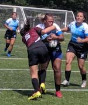
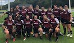
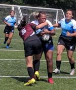
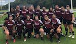

Soccer
I played Soccer from age 4 to age 17. I played goalkeeper for East Meadow Soccer Club, for middle school, and for high school.
Basketball
I played basketball from age 12 to age 17. I was always a Power Forward or a Center because I was always one of the tallest on my teams. I played for PAL, middle school, high school, and Long Island Lightning.
Softball
I played softball from age 6 to age 15. I used to be able to play any position and would just go wherever coach needed me. I played in middle school and on various travel teams.
Rugby
Once I got to college I started playing rugby. I never thought I would ever become a NCAA D2 athlete, but here I am. Molloy Women's Rugby is growing each year and is making it's way up the ranks to becoming popular.
 


